Note
Go to the end to download the full example code.
Profile Visualization in INTEGRATE¶
This notebook demonstrates the many ways to visualize posterior inversion
results as 2-D cross-section profiles using ig.plot_profile().
The DAUGAARD tTEM case study is used throughout: it contains two model types
M1 – continuous resistivity (log-resistivity layers)
M2 – discrete lithology classes
Topics covered¶
Setup and data files
Survey map and profile-line selection
X-axis choices: sequential index, UTM-X, UTM-Y
Handling spatial gaps (
gap_threshold=)Selecting a single model (
im=)All models at once (
im=0)Index-range selection (
i1=,i2=) as an alternative toii=Choosing individual panels
Uncertainty transparency (
alpha=)KL divergence instead of entropy / std (
plot_kl=True)Prior and posterior realizations (
panels=['realization'])Number of unique realizations (
show_n_unique=True)Titles and saving to file (
title=,hardcopy=True,f_png=)Combined options
try:
get_ipython()
get_ipython().run_line_magic('load_ext', 'autoreload')
get_ipython().run_line_magic('autoreload', '2')
except Exception:
pass
import numpy as np
import matplotlib.pyplot as plt
import h5py
import integrate as ig
plt.ion()
# Global flag – set to True to write PNG files alongside each plot
hardcopy = False
1. Data files¶
All examples below rely on three files from the DAUGAARD case study.
Download them once with ig.get_case_data() (commented out below).
f_prior_h5 = 'daugaard_merged_N2000000.h5'
f_post_h5 = 'post_daugaard_merged_N2000000_Nuse1000000_inflateNoise2.h5'
f_data_h5 = 'DAUGAARD_AVG_gf2.h5'
file_gex = 'TX07_20231016_2x4_RC20-33.gex'
ig.get_case_data(case='DAUGAARD', filelist=[
f_prior_h5, f_post_h5, f_data_h5, file_gex
])
Getting data for case: DAUGAARD
Downloading DAUGAARD: 0%| | 0/4 [00:00<?, ?it/s]Downloaded daugaard_merged_N2000000.h5
Downloading DAUGAARD: 25%|██▌ | 1/4 [01:37<04:52, 97.49s/it]Downloaded post_daugaard_merged_N2000000_Nuse1000000_inflateNoise2.h5
Downloading DAUGAARD: 50%|█████ | 2/4 [01:43<01:27, 43.68s/it]Downloaded DAUGAARD_AVG_gf2.h5
Downloading DAUGAARD: 75%|███████▌ | 3/4 [01:47<00:25, 25.34s/it]Downloaded TX07_20231016_2x4_RC20-33.gex
Downloading DAUGAARD: 100%|██████████| 4/4 [01:47<00:00, 15.41s/it]
Downloading DAUGAARD: 100%|██████████| 4/4 [01:47<00:00, 26.80s/it]
--> Got data for case: DAUGAARD
['daugaard_merged_N2000000.h5', 'post_daugaard_merged_N2000000_Nuse1000000_inflateNoise2.h5', 'DAUGAARD_AVG_gf2.h5', 'TX07_20231016_2x4_RC20-33.gex']
2. Survey overview and profile-line selection¶
Before plotting profiles we need to know which data points form a coherent line. Two strategies are shown:
Strategy A – select by survey line number
Strategy B – spatial buffer query along a UTM line segment
The result in both cases is id_line: a 1-D index array that is passed
to every subsequent call via ii=id_line.
ig.plot_geometry(f_data_h5, pl='NDATA', cmap='viridis', hardcopy=hardcopy)
plt.show()
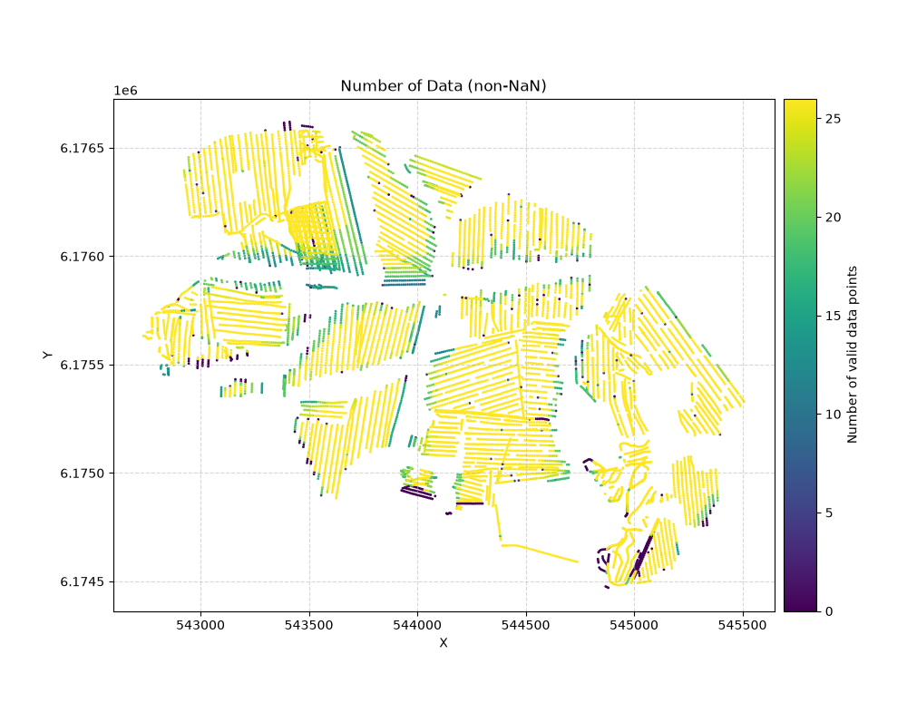
f_data_h5=DAUGAARD_AVG_gf2.h5
X, Y, LINE, ELEVATION = ig.get_geometry(f_data_h5)
with h5py.File(f_data_h5, 'r') as f_data:
NON_NAN = np.sum(~np.isnan(f_data['/D1/d_obs']), axis=1)
# --- Strategy A: use the most-common survey line number ---
unique_lines, counts = np.unique(LINE, return_counts=True)
most_frequent_line = unique_lines[np.argmax(counts)]
print("Most frequent line number:", most_frequent_line)
id_line_A = np.where(LINE == most_frequent_line)[0]
# Trim to the first continuous run of consecutive indices
diff = np.diff(id_line_A)
cut = np.where(diff > 2)[0]
if len(cut) > 0:
id_line_A = id_line_A[: cut[0] + 1]
# --- Strategy B: spatial buffer along UTM coordinates ---
Xl = np.array([544500, 543150])
Yl = np.array([6175000, 6176500])
id_line_B, _, _ = ig.find_points_along_line_segments(
X, Y, Xl, Yl, tolerance=10.0
)
# Use strategy B as the default profile line for all examples below
id_line = id_line_B
# Map showing the selected profile
plt.figure(figsize=(10, 6))
plt.scatter(X, Y, c=NON_NAN, s=1, label='All survey points')
plt.plot(X[id_line], Y[id_line], 'r.', markersize=6,
label='Selected profile (id_line)', zorder=2)
plt.colorbar(label='Non-NaN gate count')
plt.xlabel('Easting (m)')
plt.ylabel('Northing (m)')
plt.title('Survey overview – selected profile highlighted in red')
plt.axis('equal')
plt.legend()
plt.grid(True)
if hardcopy:
plt.savefig('profile_survey_overview.png', dpi=300)
plt.show()
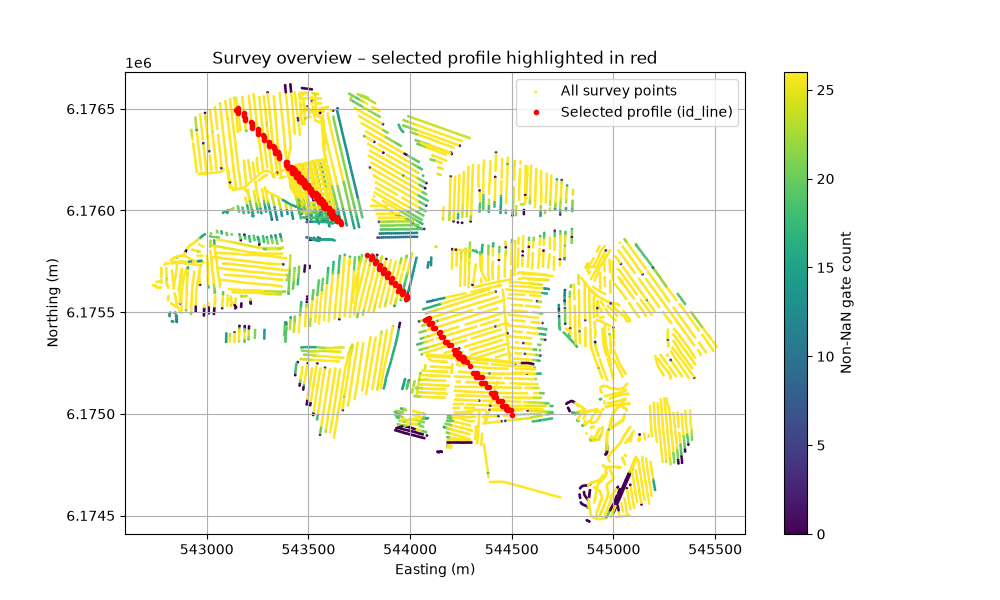
Most frequent line number: 150.0
3. X-axis choices¶
The horizontal axis of the profile cross-section can show different
coordinate types. All remaining examples use xaxis='x' (UTM easting)
because it gives physically meaningful spacing.
|
Description |
|---|---|
|
Renumbered sequential indices 0, 1, 2, … (default) |
|
Original data-point IDs from the file |
|
UTM easting (metres) |
|
UTM northing (metres) |
ig.plot_profile(f_post_h5, im=1, ii=id_line, xaxis='index')
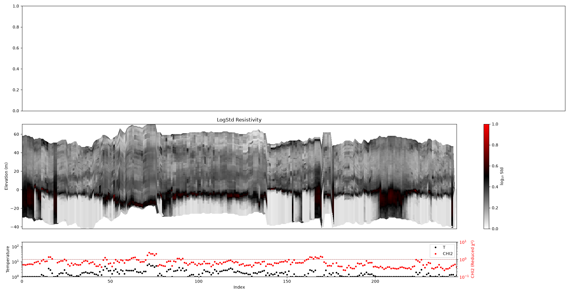
Getting cmap from attribute
Warning: HarmonicMean not found in file. Run integrate_posterior_stats() first.
ig.plot_profile(f_post_h5, im=1, ii=id_line, xaxis='x')
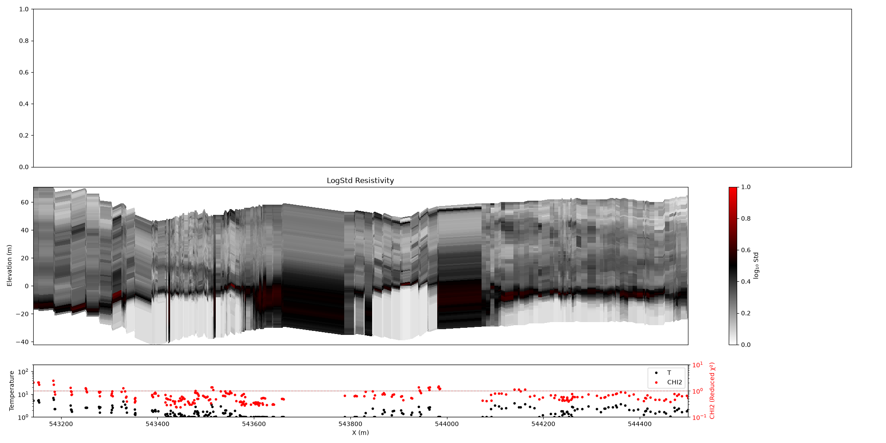
Getting cmap from attribute
Warning: HarmonicMean not found in file. Run integrate_posterior_stats() first.
ig.plot_profile(f_post_h5, im=1, ii=id_line, xaxis='y')
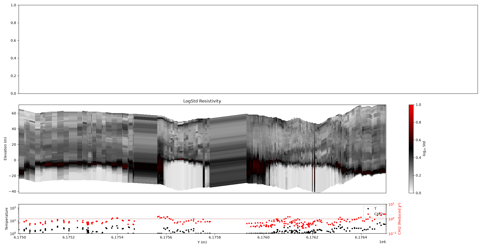
Getting cmap from attribute
Warning: HarmonicMean not found in file. Run integrate_posterior_stats() first.
4. Handling spatial gaps¶
When the selected points are not all adjacent (e.g. data from multiple
flight lines are concatenated) a gap_threshold renders the discontinuous
regions fully transparent, making line breaks clearly visible.
The threshold is expressed in the same units as the chosen x-axis:
metres for 'x' / 'y', point count for 'index'.
ig.plot_profile(f_post_h5, im=1, ii=id_line, xaxis='x', gap_threshold=50)

Getting cmap from attribute
Warning: HarmonicMean not found in file. Run integrate_posterior_stats() first.
ig.plot_profile(f_post_h5, im=2, ii=id_line, xaxis='x', gap_threshold=50)

— All examples from here on use ``ii=id_line`` and ``xaxis=’x’`` as the standard spatial profile configuration. —
5. Selecting a single model¶
Use im=1, im=2, … to target a specific model in the posterior file.
M1 – continuous resistivity (log-resistivity layers)
M2 – discrete lithology classes
ig.plot_profile(f_post_h5, im=1, ii=id_line, xaxis='x', gap_threshold=50)
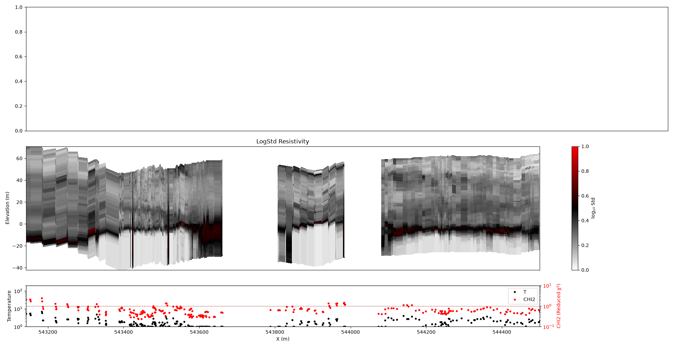
Getting cmap from attribute
Warning: HarmonicMean not found in file. Run integrate_posterior_stats() first.
ig.plot_profile(f_post_h5, im=2, ii=id_line, xaxis='x', gap_threshold=50)
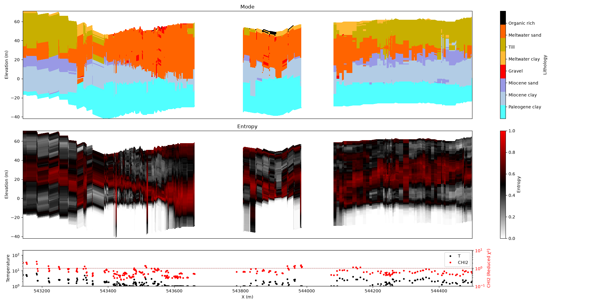
6. All models at once¶
im=0 (the default) detects every model stored in the posterior file and
produces one figure per model automatically.
ig.plot_profile(f_post_h5, im=0, ii=id_line, xaxis='x', gap_threshold=50)


Plot profile for all model parameters
Getting cmap from attribute
Warning: HarmonicMean not found in file. Run integrate_posterior_stats() first.
Only nm=1, model parameters. no profile will be plot
7. Index-range selection as an alternative to ii=¶
When you just want a quick look at a contiguous block of data points you
can use i1 / i2 instead of building an explicit index array.
Method |
How to use |
Notes |
|---|---|---|
|
|
1-based inclusive range |
|
|
Arbitrary array; overrides |
ig.plot_profile(f_post_h5, im=1, i1=1, i2=500)
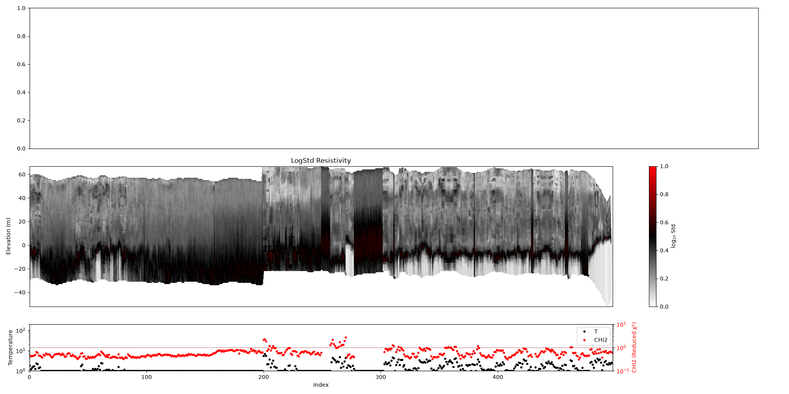
Getting cmap from attribute
Warning: HarmonicMean not found in file. Run integrate_posterior_stats() first.
ig.plot_profile(f_post_h5, im=1, ii=id_line[::2], xaxis='x', gap_threshold=50)
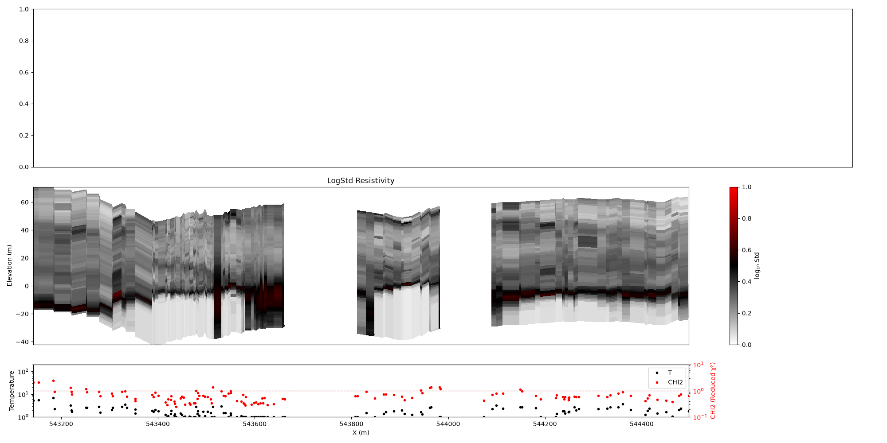
Getting cmap from attribute
Warning: HarmonicMean not found in file. Run integrate_posterior_stats() first.
8. Choosing individual panels¶
Pass panels= to show only a subset of the three panels.
Continuous models – available panels: 'value', 'std', 'stats'
(aliases: 'median'/'mean' → 'value'; 'uncertainty' → 'std';
't'/'temperature' → 'stats')
Discrete models – available panels: 'mode', 'entropy', 'stats'
(alias: 't'/'temperature' → 'stats')
Both model types also accept 'realization' in place of the first panel
(see section 11).
ig.plot_profile(f_post_h5, im=1, ii=id_line, xaxis='x', gap_threshold=50,
panels=['value'])
Getting cmap from attribute
Warning: HarmonicMean not found in file. Run integrate_posterior_stats() first.
ig.plot_profile(f_post_h5, im=1, ii=id_line, xaxis='x', gap_threshold=50,
panels=['value', 'stats'])
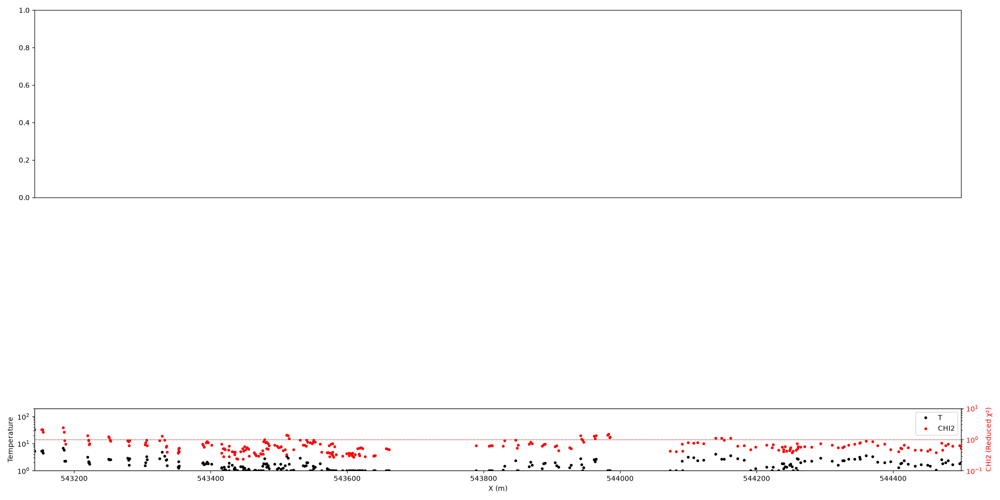
Getting cmap from attribute
Warning: HarmonicMean not found in file. Run integrate_posterior_stats() first.
ig.plot_profile(f_post_h5, im=1, ii=id_line, xaxis='x', gap_threshold=50,
panels=['std'])
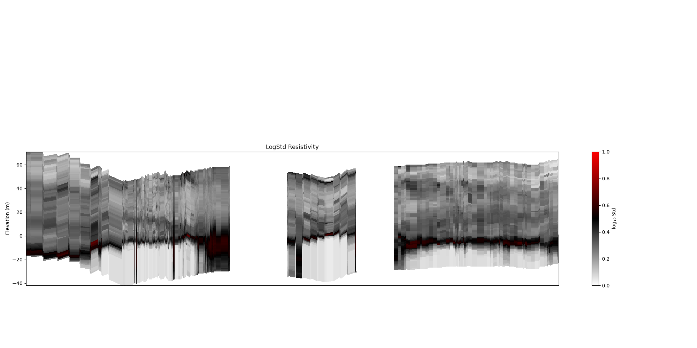
Getting cmap from attribute
ig.plot_profile(f_post_h5, im=2, ii=id_line, xaxis='x', gap_threshold=50,
panels=['mode'])
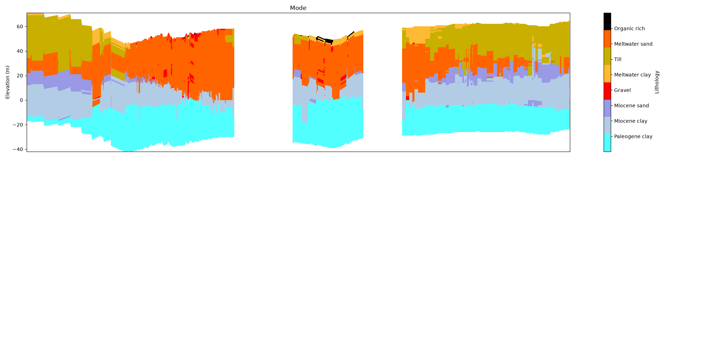
ig.plot_profile(f_post_h5, im=2, ii=id_line, xaxis='x', gap_threshold=50,
panels=['mode', 'stats'])
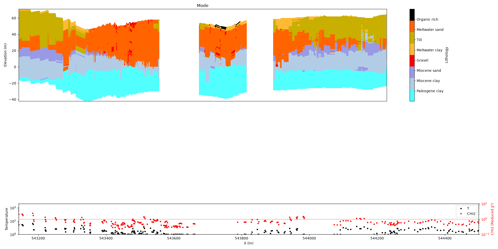
ig.plot_profile(f_post_h5, im=2, ii=id_line, xaxis='x', gap_threshold=50,
panels=['entropy'])
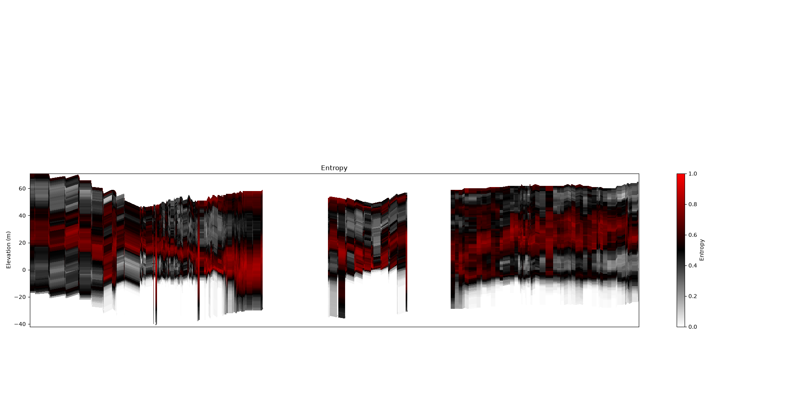
9. Uncertainty transparency¶
alpha (0–1) fades out uncertain regions in the primary panel:
M1 (continuous): driven by standard deviation
M2 (discrete): driven by entropy
alpha=0 → fully opaque everywhere (default)
alpha=1 → maximum fade where uncertainty is highest
ig.plot_profile(f_post_h5, im=1, ii=id_line, xaxis='x',
alpha=1, gap_threshold=50, std_min=0.3, std_max=0.5)

Getting cmap from attribute
Warning: HarmonicMean not found in file. Run integrate_posterior_stats() first.
ig.plot_profile(f_post_h5, im=1, ii=id_line, xaxis='x',
alpha=0.8, gap_threshold=50, std_min=0.3, std_max=0.5)

Getting cmap from attribute
Warning: HarmonicMean not found in file. Run integrate_posterior_stats() first.
ig.plot_profile(f_post_h5, im=2, ii=id_line, xaxis='x',
alpha=1.0, entropy_min=0.5, entropy_max=0.6,
gap_threshold=50)
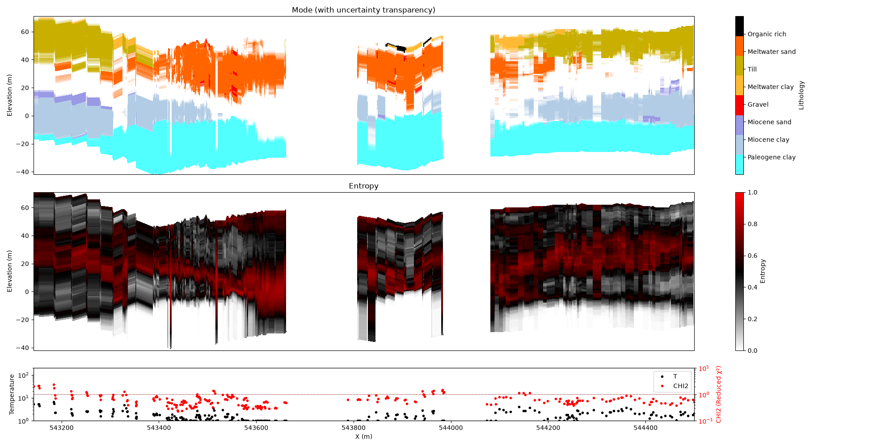
10. KL divergence¶
KL divergence measures how much the posterior distribution differs from
the prior. It is stored under Mx/KL in the posterior file after
running ig.integrate_posterior_stats(..., computeKL=True).
plot_kl=True substitutes it for the uncertainty panel:
M1: replaces Std
M2: replaces Entropy
If Mx/KL is absent the function falls back to the standard panel
with a warning.
ig.integrate_posterior_stats(f_post_h5, computeKL=True)
ig.plot_profile(f_post_h5, im=1, ii=id_line, xaxis='x',
gap_threshold=50, plot_kl=True )
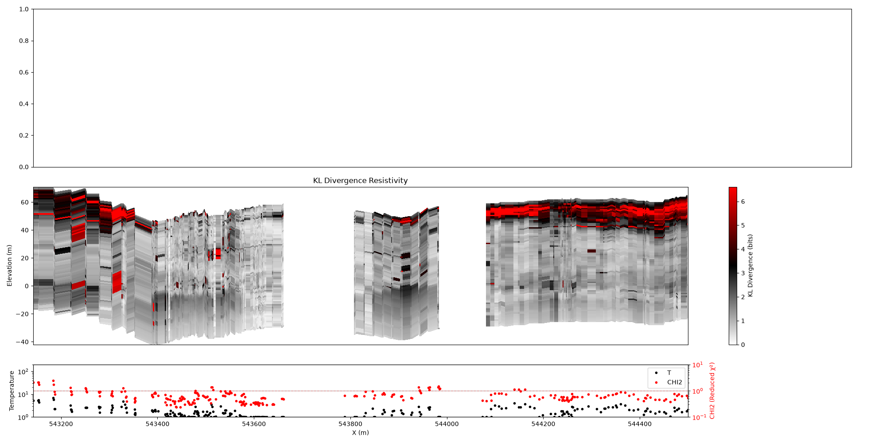
Getting cmap from attribute
Warning: HarmonicMean not found in file. Run integrate_posterior_stats() first.
/home/tmeha/PROGRAMMING/integrate_module/.venv/lib/python3.13/site-packages/numpy/lib/_function_base_impl.py:4798: UserWarning: Warning: 'partition' will ignore the 'mask' of the MaskedArray.
arr.partition(
ig.plot_profile(f_post_h5, im=2, ii=id_line, xaxis='x',
plot_kl=True, gap_threshold=50)

ig.plot_profile(f_post_h5, im=2, ii=id_line, xaxis='x',
panels=['mode', 'entropy'],
plot_kl=True, gap_threshold=50)
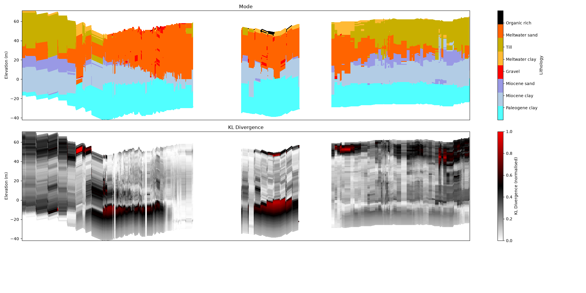
ig.plot_profile(f_post_h5, im=2, ii=id_line, xaxis='x',
panels=['entropy'], plot_kl=False)
ig.plot_profile(f_post_h5, im=2, ii=id_line, xaxis='x',
panels=['entropy'], plot_kl=True)
plt.show()
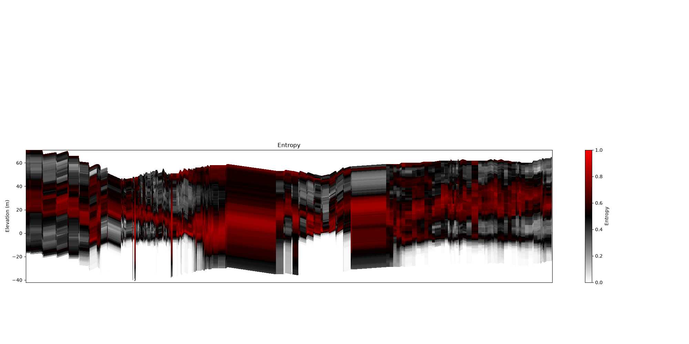
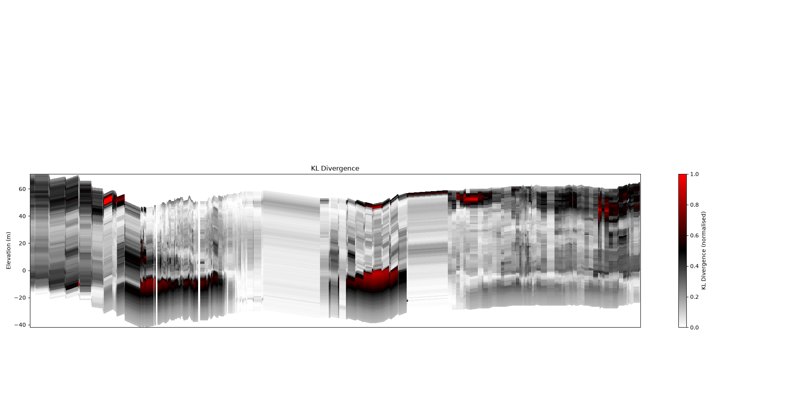
11. Prior and posterior realizations¶
Every panel so far shows a statistic of the posterior (median, mode, std,
entropy, …). Statistics are smooth by construction and hide how a single
realization actually looks. panels=['realization'] replaces the first
panel with one realization per location.
The posterior file stores /i_use of shape (n_soundings, n_real): for each
sounding, the indices of the prior models that were accepted as posterior
samples. For each location in the profile one random entry of /i_use is
drawn and the corresponding prior model is plotted. Columns are therefore
independent draws – neighbouring soundings are not forced to be consistent –
which is exactly what a realization-based section should show.
seed makes the random draw reproducible.
Posterior realization – continuous resistivity, with std and stats panels
ig.plot_profile(f_post_h5, im=1, ii=id_line, xaxis='x', gap_threshold=50,
panels=['realization', 'std', 'stats'], seed=1,
title='Posterior realization (seed=1)')
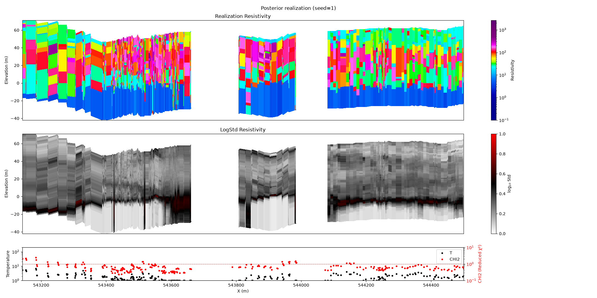
Getting cmap from attribute
Two more draws – same location, different realizations
for seed in (2, 3):
ig.plot_profile(f_post_h5, im=1, ii=id_line, xaxis='x', gap_threshold=50,
panels=['realization'], seed=seed,
title='Posterior realization (seed=%d)' % seed)
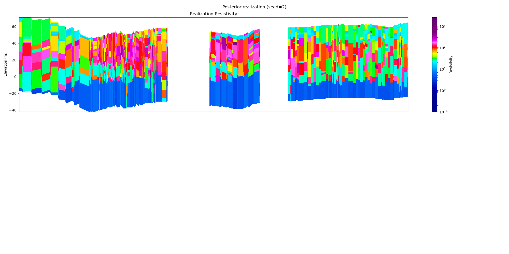
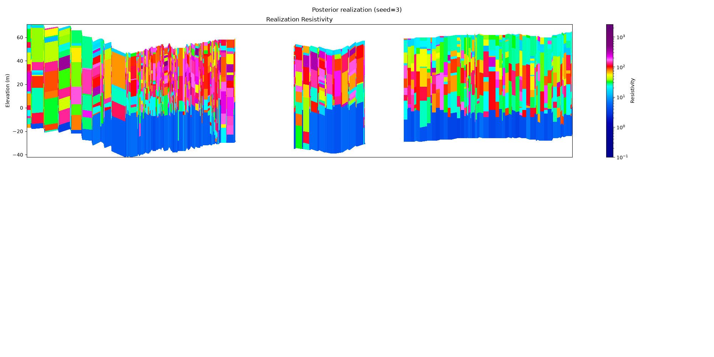
Getting cmap from attribute
Getting cmap from attribute
Posterior realization – discrete lithology
ig.plot_profile(f_post_h5, im=2, ii=id_line, xaxis='x', gap_threshold=50,
panels=['realization', 'entropy', 'stats'], seed=1,
title='Posterior realization (seed=1)')
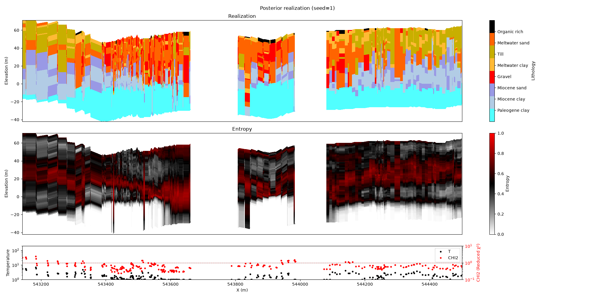
Prior realizations¶
plot_prior=True replaces /i_use with random prior indices of the same
shape before the draw, so the panel shows a prior realization per location.
Comparing a prior and a posterior section with the same seed is a direct
visual check of how much the data constrain the model.
ig.plot_profile(f_post_h5, im=1, ii=id_line, xaxis='x', gap_threshold=50,
panels=['realization'], plot_prior=True, seed=1,
title='Prior realization')
ig.plot_profile(f_post_h5, im=1, ii=id_line, xaxis='x', gap_threshold=50,
panels=['realization'], seed=1,
title='Posterior realization')
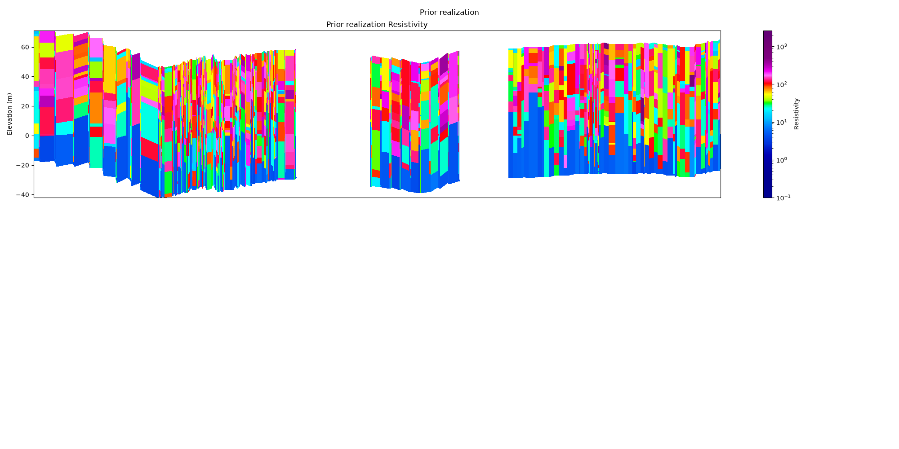

Getting cmap from attribute
Getting cmap from attribute
ig.plot_profile(f_post_h5, im=2, ii=id_line, xaxis='x', gap_threshold=50,
panels=['realization'], plot_prior=True, seed=1,
title='Prior realization')
ig.plot_profile(f_post_h5, im=2, ii=id_line, xaxis='x', gap_threshold=50,
panels=['realization'], seed=1,
title='Posterior realization')
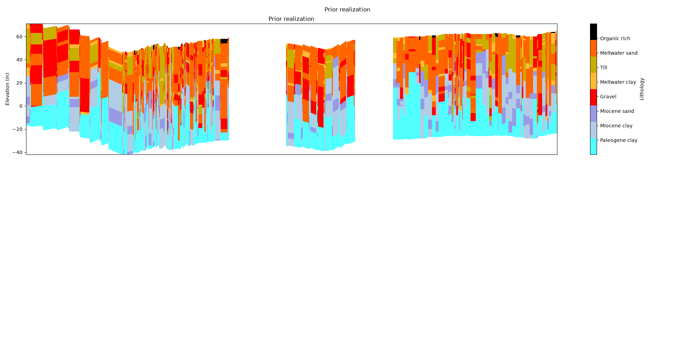
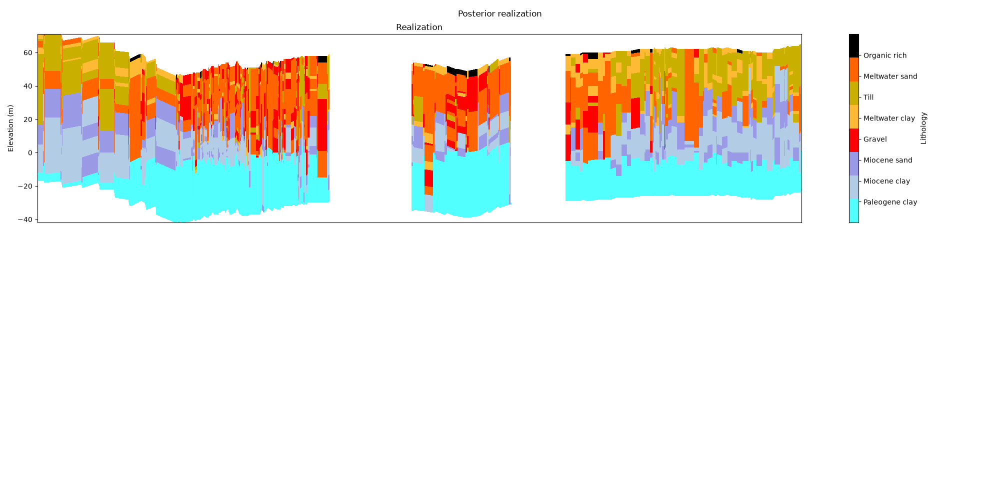
Uncertainty transparency works on the realization panel too: cells with high posterior std / entropy are faded, so the realization is shown together with how well it is constrained.
ig.plot_profile(f_post_h5, im=2, ii=id_line, xaxis='x', gap_threshold=50,
panels=['realization'], seed=1, alpha=1.0,
entropy_min=0.5, entropy_max=0.6)
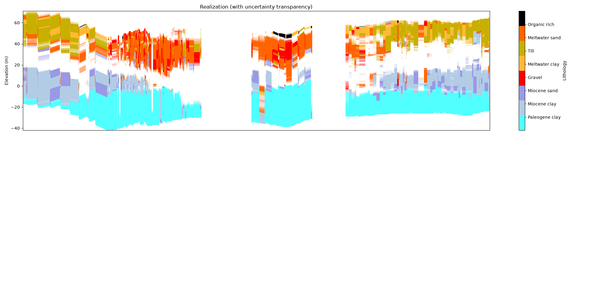
Choosing the realizations yourself¶
i_plot_realization bypasses the random draw. It must be an array of prior
indices with one entry per location – either of length len(ii) (the
locations in the profile) or of length n_soundings (all locations, subset
by ii internally). A scalar is rejected.
The most common use is a fixed column of /i_use, i.e. “posterior
realization number k at every location”:
with h5py.File(f_post_h5, 'r') as f_post:
i_use = f_post['/i_use'][:]
for k in (0, 5):
ig.plot_profile(f_post_h5, im=1, ii=id_line, xaxis='x', gap_threshold=50,
panels=['realization'], i_plot_realization=i_use[:, k],
title='Posterior realization column %d of /i_use' % k)
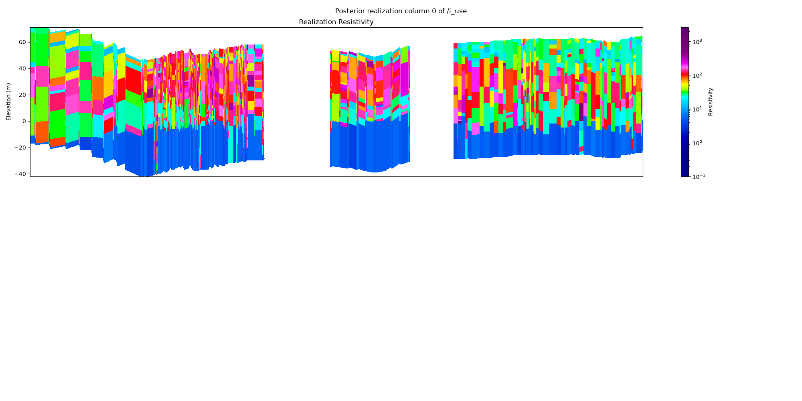
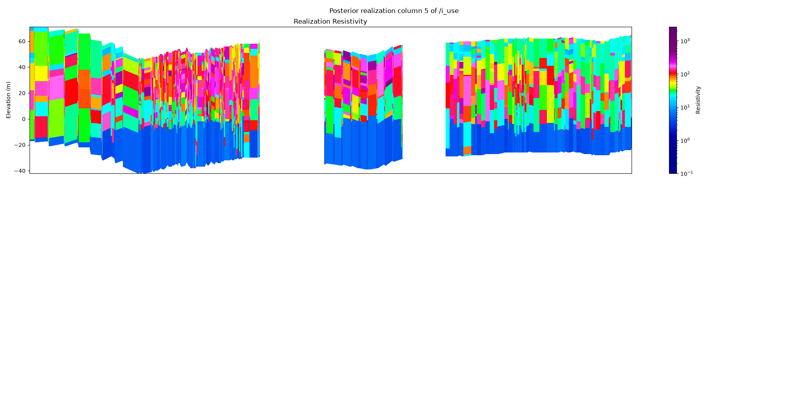
Getting cmap from attribute
Getting cmap from attribute
Any other selection works the same way, e.g. random prior models drawn here
in the script (equivalent to plot_prior=True), or one entry per location
picked by some criterion of your own:
with h5py.File(f_prior_h5, 'r') as f_prior:
N = f_prior['/M1'].shape[0]
rng = np.random.default_rng(1)
i_prior = rng.integers(0, N, size=len(id_line))
ig.plot_profile(f_post_h5, im=1, ii=id_line, xaxis='x', gap_threshold=50,
panels=['realization'], i_plot_realization=i_prior,
title='Prior realization (indices chosen in the script)')
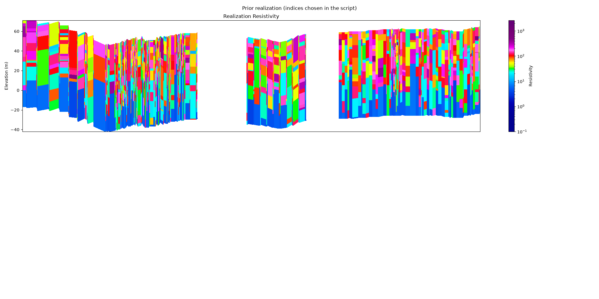
Getting cmap from attribute
12. Number of unique realizations¶
show_n_unique=True overlays the count of distinct accepted posterior
realizations at each location onto the stats panel. Requires N_UNIQUE
to be stored in the posterior file.
ig.plot_profile(f_post_h5, im=1, ii=id_line, xaxis='y',
show_n_unique=True, gap_threshold=50)
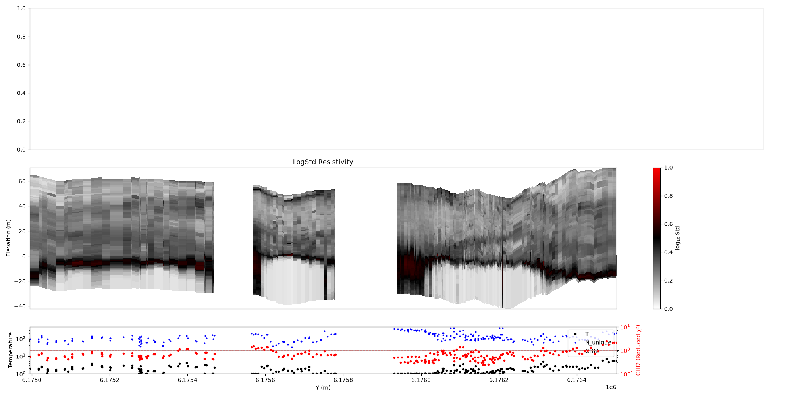
Getting cmap from attribute
Warning: HarmonicMean not found in file. Run integrate_posterior_stats() first.
ig.plot_profile(f_post_h5, im=2, ii=id_line, xaxis='x',
show_n_unique=True, gap_threshold=50)
13. Titles and saving figures to disk¶
title= adds a figure title above all panels.
hardcopy=True writes a PNG file. By default the name is generated from
the posterior file name, index range, model index and panels; txt=
appends a suffix to that name. f_png= sets the file name explicitly
instead (use it with a specific im, since im=0 would write every
model to the same file).
ig.plot_profile(f_post_h5, im=1, ii=id_line, xaxis='x',
gap_threshold=50, title='Line 100 – resistivity',
hardcopy=True)
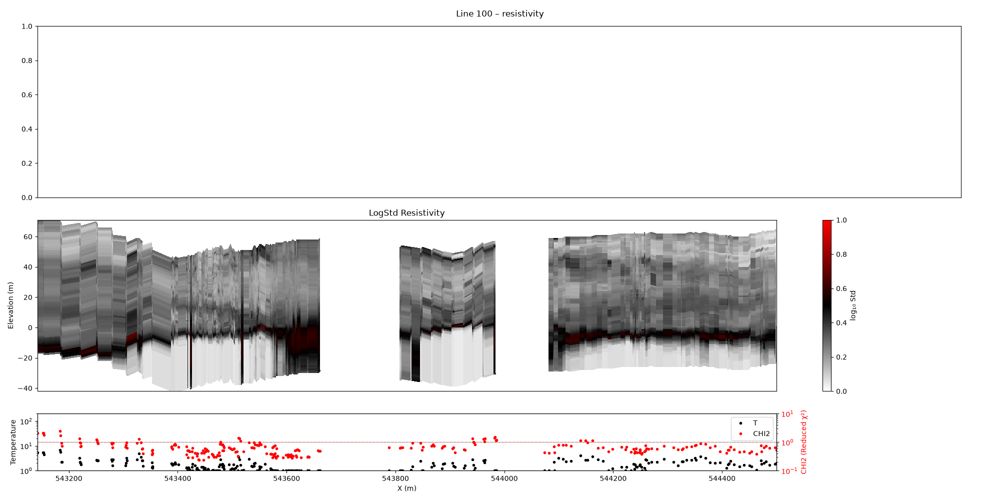
Getting cmap from attribute
Warning: HarmonicMean not found in file. Run integrate_posterior_stats() first.
ig.plot_profile(f_post_h5, im=1, ii=id_line, xaxis='x',
panels=['value', 'stats'],
hardcopy=True, txt='value_only')

Getting cmap from attribute
Warning: HarmonicMean not found in file. Run integrate_posterior_stats() first.
ig.plot_profile(f_post_h5, im=2, ii=id_line, xaxis='x',
plot_kl=True, gap_threshold=50,
hardcopy=True, f_png='line100_M2_kl.png')
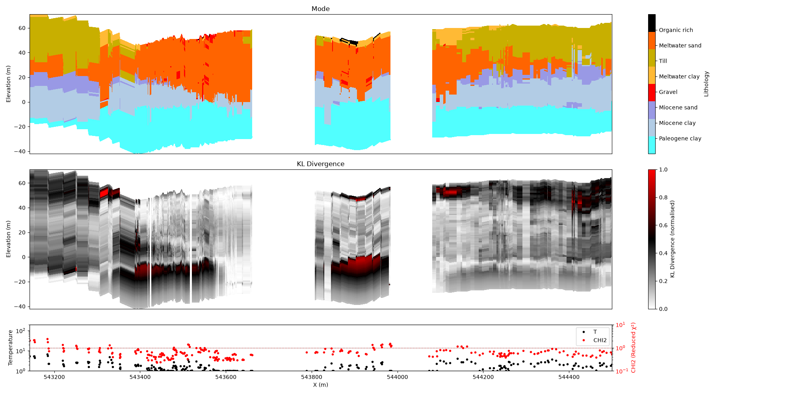
ig.plot_profile(f_post_h5, im=1, ii=id_line, xaxis='x', gap_threshold=50,
panels=['realization'], seed=1,
title='Posterior realization',
hardcopy=True, f_png='line100_M1_realization.png')
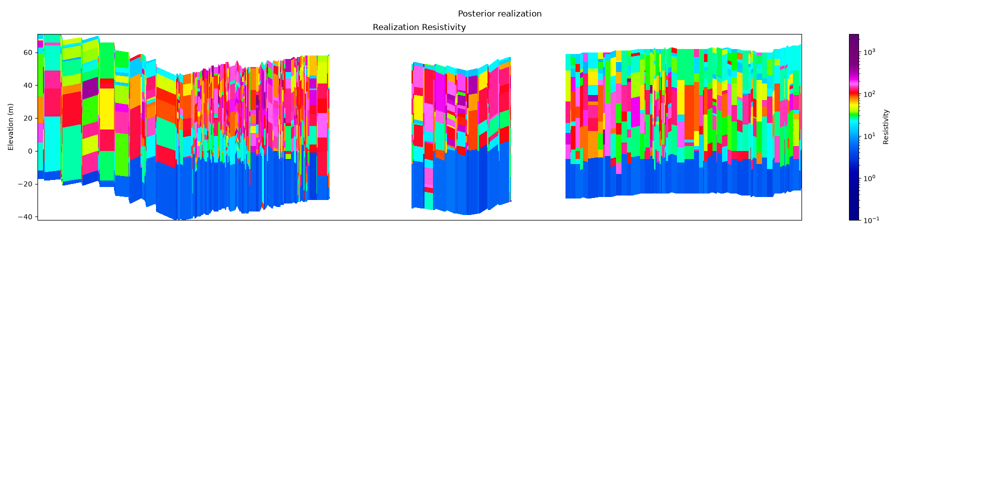
Getting cmap from attribute
14. Combined options¶
Putting it all together for publication-quality figures.
ig.plot_profile(f_post_h5, im=1, ii=id_line, xaxis='x',
alpha=0.8, gap_threshold=50,
hardcopy=hardcopy)

Getting cmap from attribute
Warning: HarmonicMean not found in file. Run integrate_posterior_stats() first.
ig.plot_profile(f_post_h5, im=2, ii=id_line, xaxis='x',
plot_kl=True, gap_threshold=50,
hardcopy=hardcopy)

ig.plot_profile(f_post_h5, im=1, ii=id_line, xaxis='x',
panels=['value', 'stats'],
show_n_unique=True, gap_threshold=50)
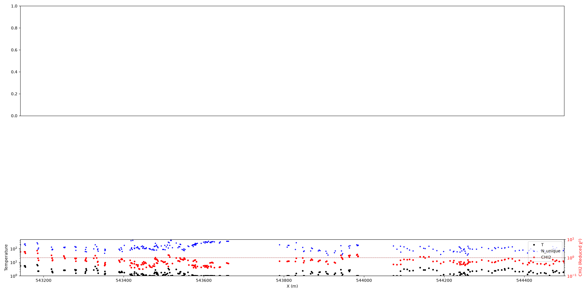
Getting cmap from attribute
Warning: HarmonicMean not found in file. Run integrate_posterior_stats() first.
ig.plot_profile(f_post_h5, im=2, ii=id_line, xaxis='x',
panels=['mode'],
alpha=0.7, gap_threshold=50)
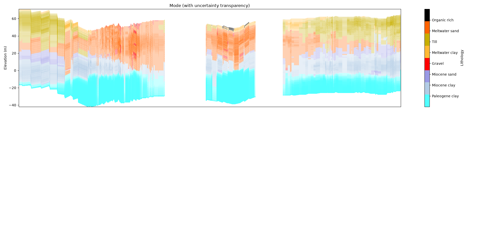
ig.plot_profile(f_post_h5, im=0, ii=id_line, xaxis='x',
plot_kl=True, gap_threshold=50,
hardcopy=hardcopy)


Plot profile for all model parameters
Getting cmap from attribute
Warning: HarmonicMean not found in file. Run integrate_posterior_stats() first.
/home/tmeha/PROGRAMMING/integrate_module/.venv/lib/python3.13/site-packages/numpy/lib/_function_base_impl.py:4798: UserWarning: Warning: 'partition' will ignore the 'mask' of the MaskedArray.
arr.partition(
Only nm=1, model parameters. no profile will be plot
Summary of key plot_profile() options¶
Option |
Values |
Effect |
|---|---|---|
|
|
Select model; 0 plots all |
|
array |
Explicit index selection (overrides |
|
int |
1-based range, alternative to |
|
|
Horizontal axis type |
|
float |
Mark gaps beyond this distance as transparent |
|
0–1 |
Uncertainty-driven transparency of primary panel |
|
list of str |
Subset of panels to show |
|
bool |
KL divergence instead of entropy / std |
|
bool |
Overlay N_unique on stats panel |
|
– |
One posterior realization per location instead of a statistic |
|
int |
Reproducible random draw of realizations |
|
bool |
Draw realizations from the prior instead of |
|
array of int |
Prior index to plot at each location (length |
|
str |
Figure title above all panels |
|
bool |
Save PNG file |
|
str |
Suffix appended to auto-generated filename |
|
str |
Explicit output filename (overrides the automatic name) |
Total running time of the script: (1 minutes 56.696 seconds)